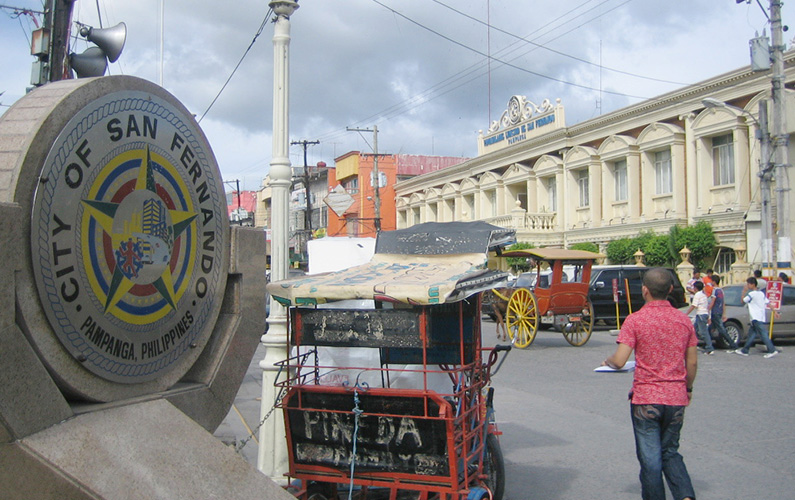

A Photo Tour of
PAMPANGA
2. San Fernando
San Fernando City, the capital of Pampanga, is renowned for its vibrant Giant Lantern Festival, which showcases the artistry and creativity of Kapampangans through enormous, intricate lanterns that draw visitors from across the country and around the world. The city is also home to Kapampangan’s Best, a beloved brand that highlights the region’s culinary excellence and is famous for its premium processed meat products, reflecting San Fernando’s reputation as a center of Kapampangan cuisine and heritage. In addition to its festive traditions, San Fernando boasts historical landmarks such as the Metropolitan Cathedral and a well-preserved heritage district, making it a hub of culture, history, and culinary pride in Pampanga.

The Giant Lantern Festival, known locally as Ligligan Parul, is an annual event celebrated in San Fernando, Pampanga, every mid-December, marking the start of the Christmas season with a vibrant competition of massive, intricately designed lanterns that light up the city and attract visitors from all over the country